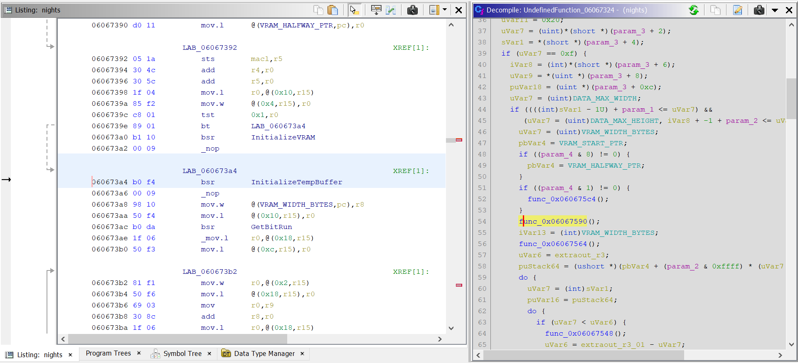
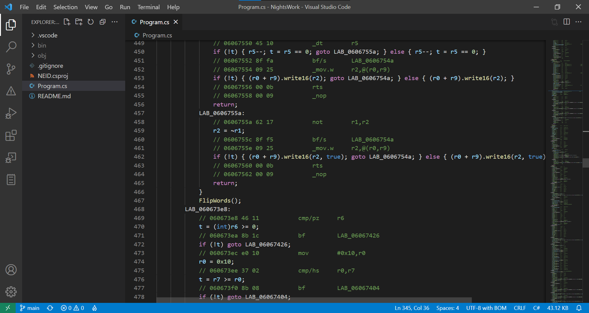
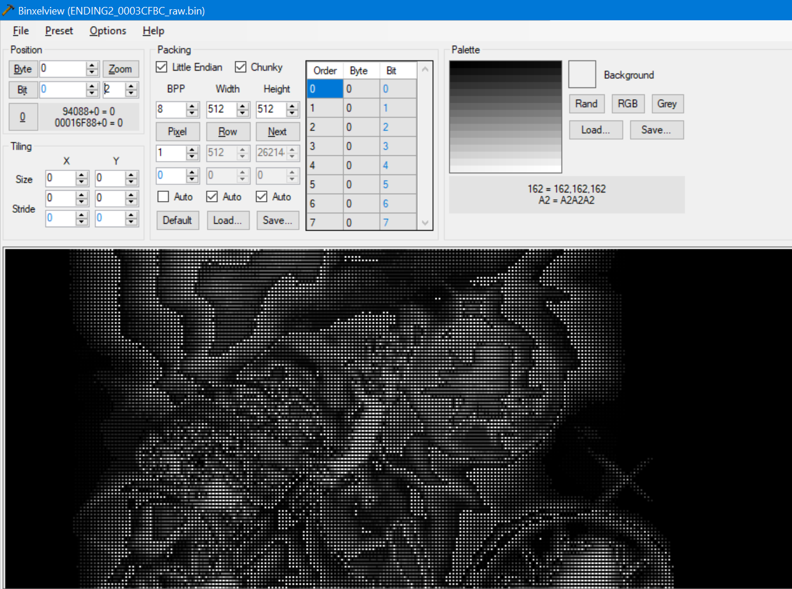

NEID
In December 2021, a tweet about reverse engineering the Sega Saturn game "NiGHTS into Dreams..." caught my eye. Within the game's community there had been constant discussion of a cut boss named Self (Selph in the game files), with few clues pointing to what the character actually looked like. In my search for this proverbial white whale, I ended up writing an interesting utility for the game that hadn't existed previously.
It was widely believed that graphics for Self existed in the ending and credits data of the game, however the graphics data was in a format that at that point had not been figured out in any capacity. There wasn't too much work put into dissecting the code of the game in general, but the Sega Saturn's hardware and memory setup had already been fairly well documented, so I decided to try my hand at disassembly. With the help of the Ghidra reverse-engineering suite, as well as the debugger integrated into my Saturn emulator, I was able to narrow down the exact program and memory addresses where the graphics data was loaded and processed. The nature of the code I discovered proved to be tricky...

Ghidra comes equipped with a decompiler that attempts to take a given set of assembly instructions, and transform it into more readable C code. Unfortunately, due to how the code was structured (which was tripping up the decompiler), as well as the Saturn itself working in big-endian (when all modern desktop computers work in little-endian), I couldn't easily work the C code to my advantage. In order to get this code working outside its original context, I ended up taking a very unorthodox and very silly approach...

I hand-translated every single SuperH 2 instruction in the graphics processing function to working code in C#. I wrote a wrapper around every memory I/O operation such that Saturn-based addresses mapped to appropriate allocated buffers for the program, and all reads and writes were automatically endian-swapped. I cross-checked, double checked, triple checked, with an instruction set reference to ensure every single translated instruction did the exact same intended operations specified. Eventually, miraculously, I ended up with perfectly-working "pre-emulated" code that read in compressed graphics data, and decompressed it directly into an output buffer.

Did I find Self? Unfortunately, none of the extracted data gave any clues. But in the process of looking I learned SH2 assembly, cracked a compression format, and got ahold of raw data that had not been seen in a viewable form since probably 1996. The end result is NiGHTS Ending Image Decompressor (NEID), whose source code you can find here.